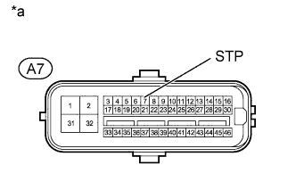

DTC C1422 Master Cylinder Pressure Sensor Zero Point High Malfunction |
DTC C1456 Control Pressure Sensor Zero Point High |
| DTC Code | DTC Detection Condition | Trouble Area |
| C1422 | When the stop light switch is off, the PM/C1 terminal voltage is 0.86 V or higher for 5 seconds or more. |
|
| C1456 | When the stop light switch is off, the PCTRL terminal voltage is 0.86 V or higher for 5 seconds or more. |
|
| 1.CHECK STOP LIGHT OPERATION |
Check that the stop lights come on when the brake pedal is depressed and go off when the brake pedal is released.
| Condition | Illumination Condition |
| Brake pedal depressed | On |
| Brake pedal released | Off |
|
| ||||
| OK | |
| 2.READ VALUE USING INTELLIGENT TESTER (STOP LIGHT SW) |
Turn the engine switch off.
Connect the intelligent tester to the DLC3.
Turn the engine switch on (IG).
Turn the intelligent tester on.
Enter the following menus: Chassis / ABS/VSC/TRC / Data List.
| Tester Display | Measurement Item/Range | Normal Condition | Diagnostic Note |
| Stop Light SW | Stop light switch / ON or OFF | ON: Brake pedal depressed OFF: Brake pedal released | - |
Check that the stop light switch display observed on the intelligent tester changes according to brake pedal operation.
|
| ||||
| OK | |
| 3.CHECK BRAKE PEDAL AND STOP LIGHT SWITCH INSTALLATION |
Turn the engine switch off.
Check the brake pedal height and stop light switch installation (Click here).
|
| ||||
| OK | |
| 4.RECONFIRM DTC |
Clear the DTC (Click here).
Start the engine.
Drive the vehicle at a speed of 40 km/h (25 mph) or more and perform braking test (decelerate the vehicle by depressing the brake pedal).
Check if the same DTC is output (Click here).
| Result | Proceed to |
| DTC is not output | A |
| DTC is output | B |
|
| ||||
| A | ||
| ||
| 5.CHECK TERMINAL VOLTAGE (STP) |
Disconnect the A7 skid control ECU connector.
|  |
Measure the voltage according to the value(s) in the table below.
| Tester Connection | Switch Condition | Specified Condition |
| A7-7 (STP) - Body ground | Brake pedal depressed | 8 to 14 V |
| Brake pedal released | Below 1.5 V |
| *a | Front view of wire harness connector (to Skid Control ECU) |
|
| ||||
| OK | ||
| ||